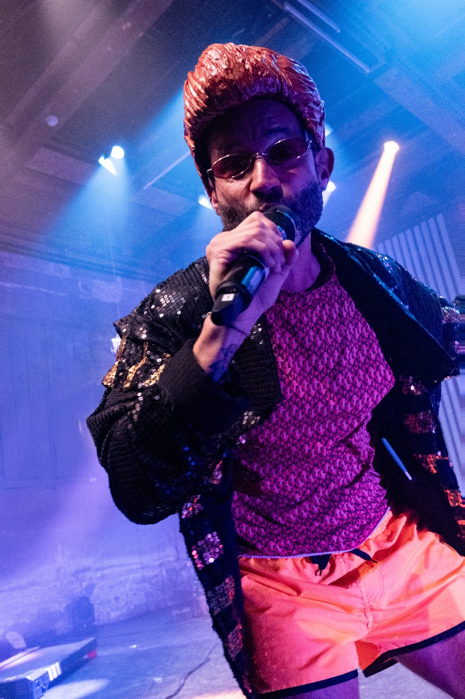
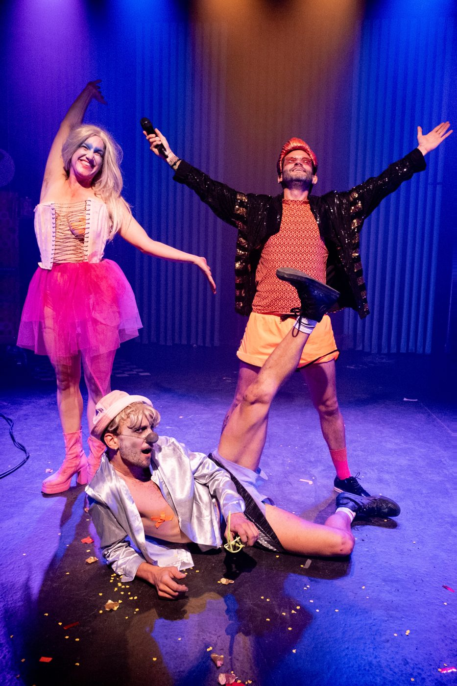
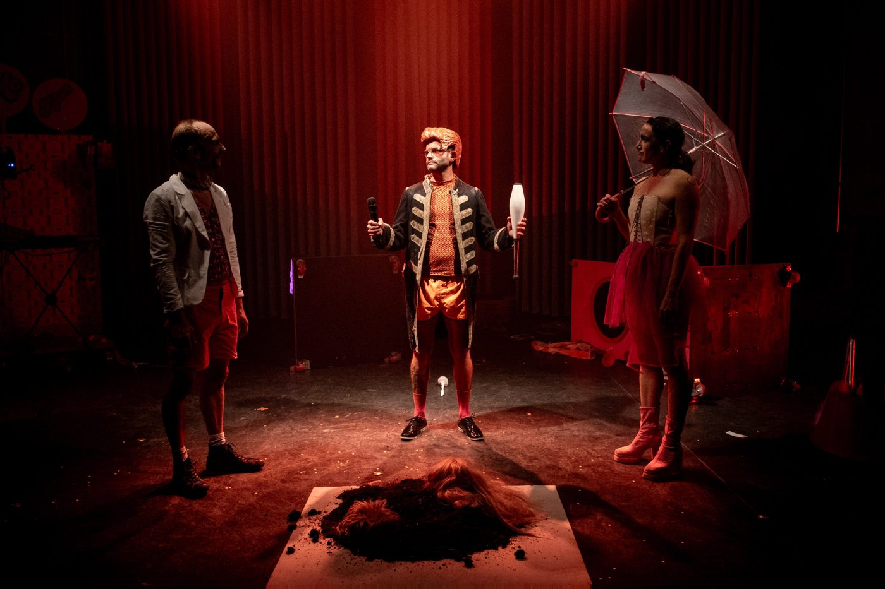

2026 · premiere, Schlachthaus Theater Bern2026 · prima, Schlachthaus Theater Berna

Smash – A Relationshit
Not a declaration of love: an autopsy. Through the pink plastic world of Barbie and Ken, the show takes apart a modern couple, between children, open relationship, screaming boredom and the longing for the romantic ideal.Non una dichiarazione d'amore: un'autopsia. Attraverso il mondo di plastica rosa di Barbie e Ken, lo spettacolo smonta una coppia di oggi, tra figli, relazione aperta, noia urlante e la nostalgia dell'ideale romantico.
Music: Valerio Rodelli · By and with Newa Grawit, Noah Egli · Coproduction with Schlachthaus Theater BernMusica: Valerio Rodelli · Di e con Newa Grawit, Noah Egli · Coproduzione con lo Schlachthaus Theater di Berna


